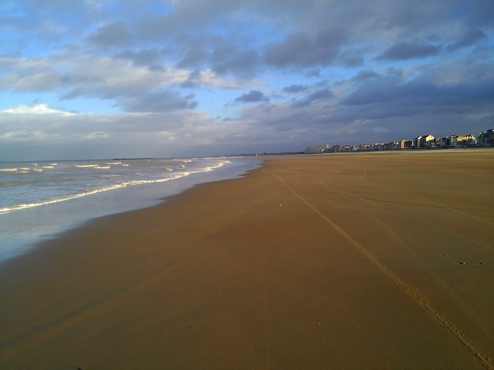

Malo-les-Bains — Dunkerque
Nord, France · kitesurf, baignade, paddle

La plage de Dunkerque, large et plate : digue animée, baignade familiale et bon spot de kite par vent de nord-ouest.
- Lieu
- Nord, France
- Niveau
- Débutant
- Activités
- kitesurf, baignade, paddle
- Type d'eau
- Mer / océan
- Coordonnées
- 51.05, 2.40 (position approximative du secteur)
Dangers à connaître
- Proximité du port et du trafic maritime.
- Estran plat, marée rapide.
Le conseil d'Ocean Buddy
Évite la zone du chenal portuaire à l'est.
Ouvrir dans Ocean Buddy Télécharger sur l'App Store
Source : Description historique Ocean Buddy · vérification externe en attente.